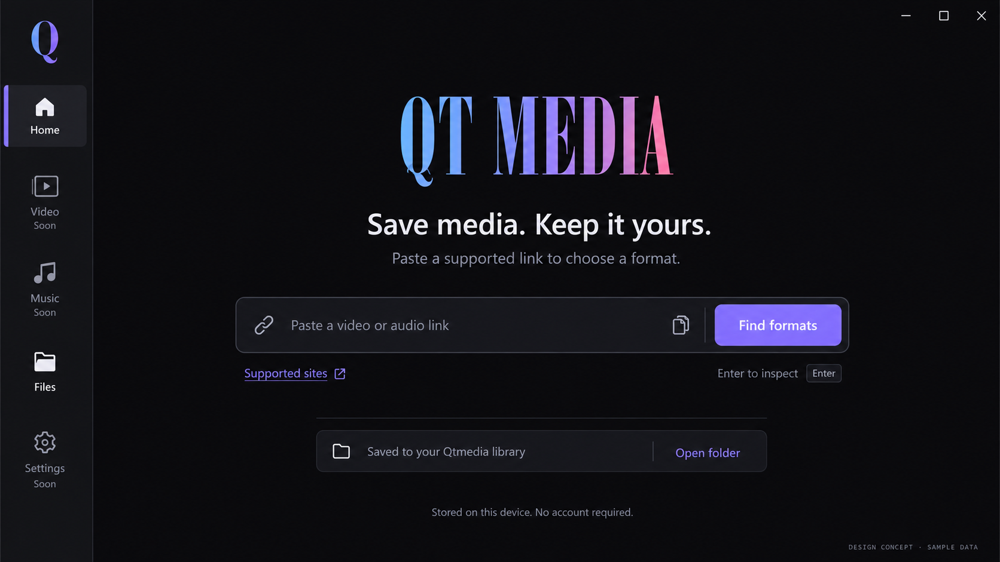
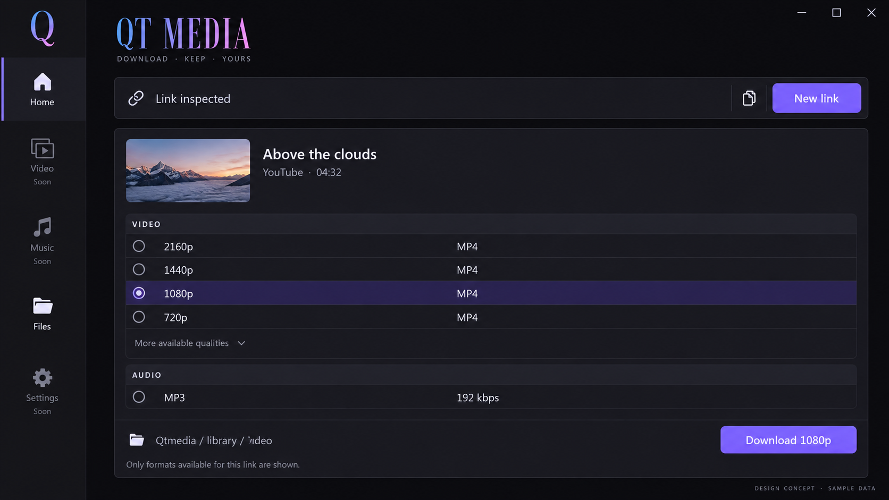
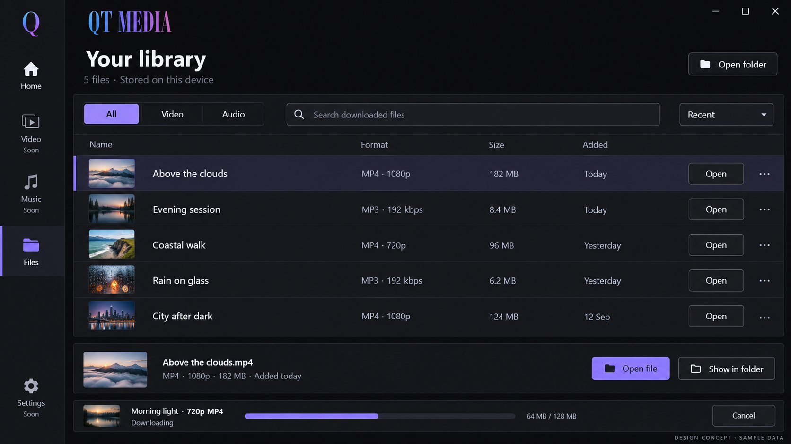

01 / Home: make the next action obvious
One link field, an explicit format lookup, supported-source help, and a shortcut to local storage.

02 / Formats: choose, then download
A downward-revealing panel groups real video qualities and MP3 in one selection flow. Inspection artwork is a proposed addition; all displayed media and format data here are illustrative.

03 / Files: keep the library and progress together
Readable local files, filtering, and obvious open actions. The persistent transfer tray, saved quality labels, and per-file reveal action require implementation beyond the current bridge.
